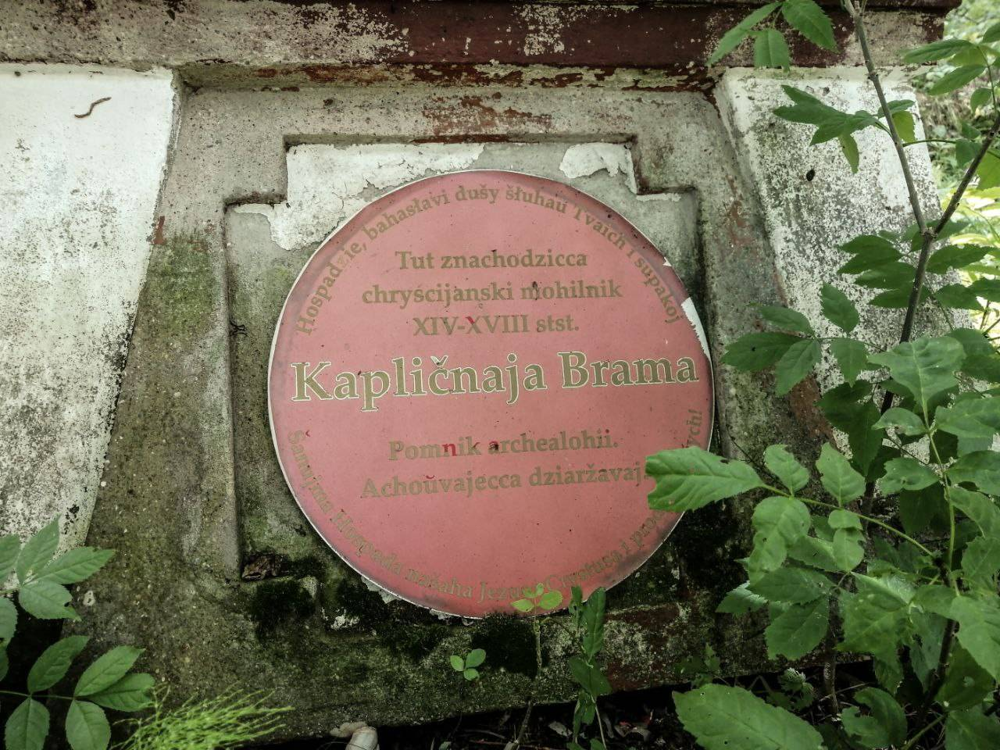
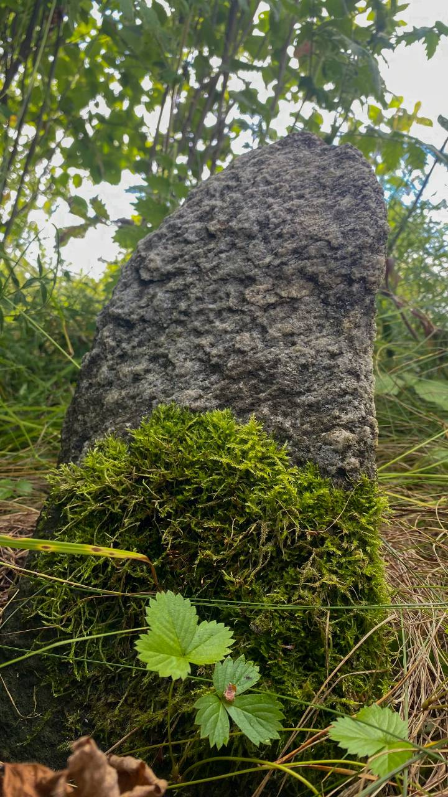
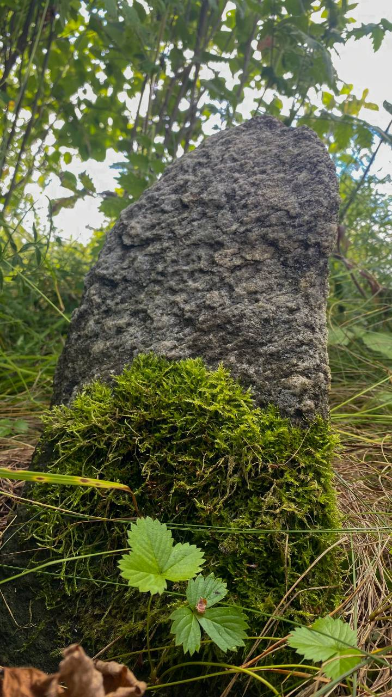

Бывали ли вы когда-нибудь на первых христианских кладбищах?

Одно из немногих мест захоронения первых христиан 13 -14 века, находится недалеко от городка Лынтупы. Такие кладбища назывались “Жальник”(от бел. “жаль” – скорбь). Их несколько на всей территории Беларуси. Хоронили тогда христиан так: закапывали на несколько метров в землю, искали камень с плоской стороной, иногда выбивали крестик, который порой можно было найти только на ощупь и ставили на место захоронения.
 

Еще до появления на этом месте Жальника тут находилось капище (языческий храм под открытым небом) богини усопших Мары, которая по преданиям, освещала праведным душам дорогу в языческий яблоневый (райский) сад. Узнать о расположения здесь языческого капища помогли сохранившиеся средневековые языческие источники и рассказы местных жителей.
Записал Андрей Вишневский